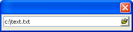

Text Box F Directive
Syntax
%F%
Description
The F directive converts a text box into a file selection smart control.
Example
|
dim Filename_Variable as C = "c:\text.txt" ui_dlg_box("",<<%dlg% [%F%.50Filename_Variable]; %dlg%) |

See Also
Xdialog Language Directives and Operators, Text Box T Directive, Text Box Syntax, Date and Time Format Elements